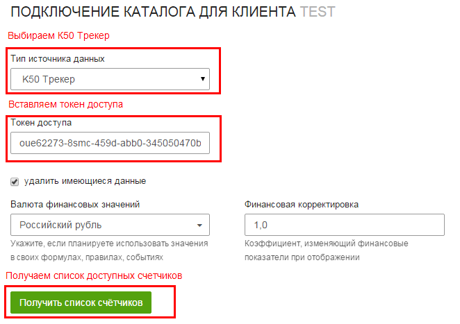
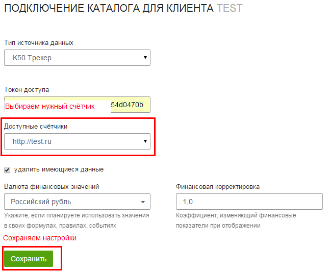

Интеграция с Оптимизатором К50
Вы можете передавать данные о звонках и заказах, собранные в трекере, в К50:Оптимизатор. Они позволят вам проводить более детальный анализ рекламных кампаний с помощью статистики, обогощая выборку данных для оптимизации с помощью правил и стратегий.
Получение токена доступа
Для подключения трекера к К50:Оптимизатору вам необходимо получить токен доступа. Процедура получения описана в разделе получение токена доступа.
Подключение к Оптимизатору
Подключение к Оптимизатору осуществляется через подключение Учета звонков и заказов

При подключении необходимо выбрать К50 трекера в качестве типа источника данных и указать токен доступа.

На следующем шаге следует выбрать счетчик, который вы хотите подключить, и сохранить настройки.

Параметры полей
Поскольку трекер, в отличие от остальных сервисов, экспортирует данные в Оптимизатор и о звонках, и о заказах, формат данных несколько отличается.
Ниже приведены поля и данные, в которые их пробрасывают
| Метрика К50 Оптимизатора | Описание |
|---|---|
| CRM: Количество заказов | Количество обращений клиентов. Это сумма всех звонков и online заказов клиента |
| CRM: Цель 1 | Количество уникальных звонков. Под уникальным звонков подразумевается первый звонок клиента |
| CRM: Цель 3 | Количество всех заказов (offline и online) |
| CRM: Цель 4 | Количество offline заказов |
| CRM: Цель 5 | Количество online заказов |
| CRM: Оборот с заказов | Доход (оборот) с заказов |
| CRM: Прибыль с заказов | Прибыль (маржа) с заказов |